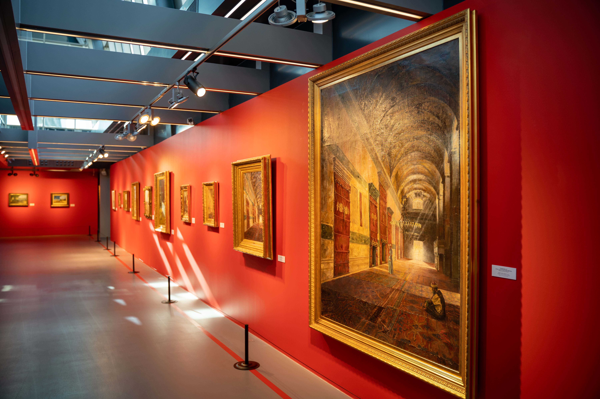
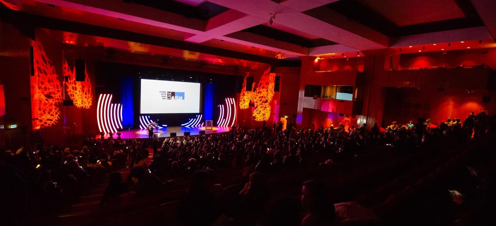
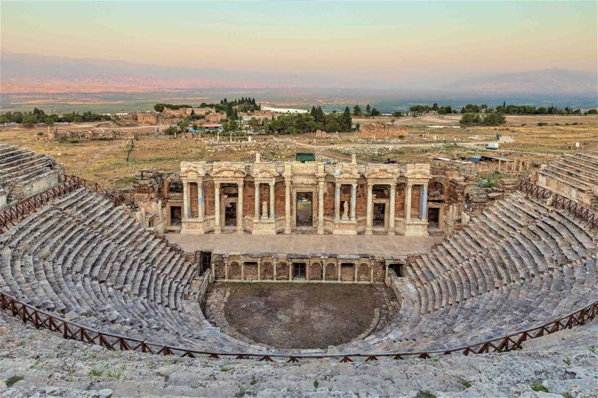
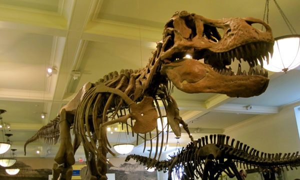
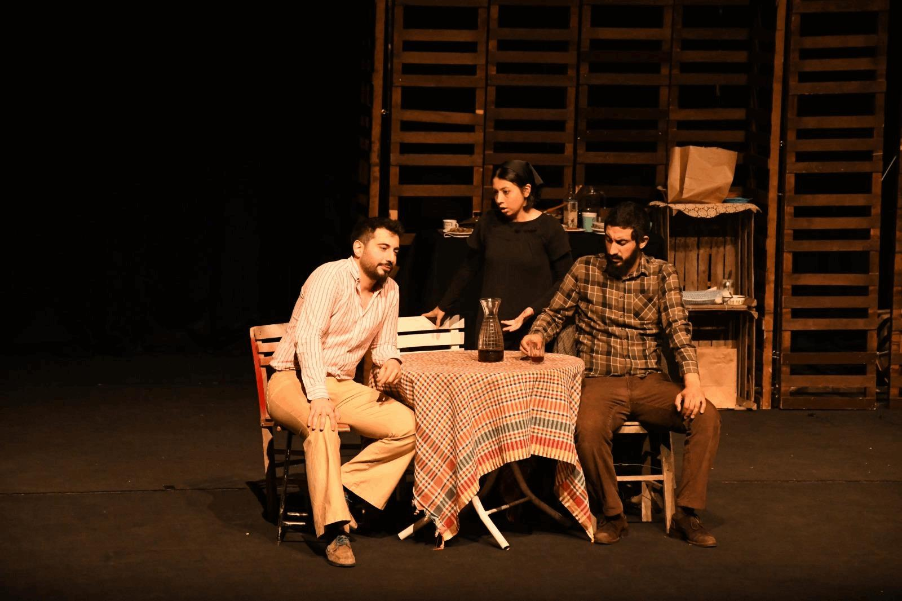

Kültür Haberleri

24 Aralık 2025 • Kültür
👁 19.432
İstanbul’da Yeni Çağdaş Sanat Sergisi Açıldı
Genç sanatçıların eserleri büyük ilgi görüyor.

24 Aralık 2025 • Kültür
👁 16.205
Film Festivali Rekor Katılımla Sona Erdi
Festivalde 80’den fazla film gösterildi.

24 Aralık 2025 • Kültür
👁 14.188
Tarihi Tiyatro Yeniden Sanatseverlerle Buluştu
Restorasyonu tamamlanan tiyatro kapılarını açtı.

24 Aralık 2025 • Kültür
👁 12.902
Yeni Albüm Dijital Platformlarda Yayında
Sanatçının uzun süredir beklenen albümü çıktı.

24 Aralık 2025 • Kültür
👁 11.347
Müzeler Yıl Sonuna Kadar Ücretsiz
Kültür Bakanlığı’ndan ziyaretçilere müjde.

24 Aralık 2025 • Kültür
👁 9.865
Yerel Tiyatro Oyununa Yoğun İlgi
Yeni sezonda salonlar doluyor.